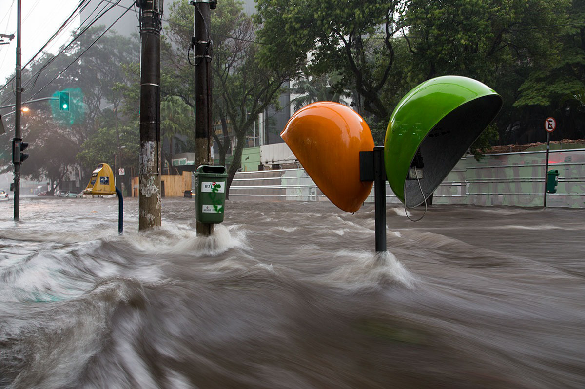
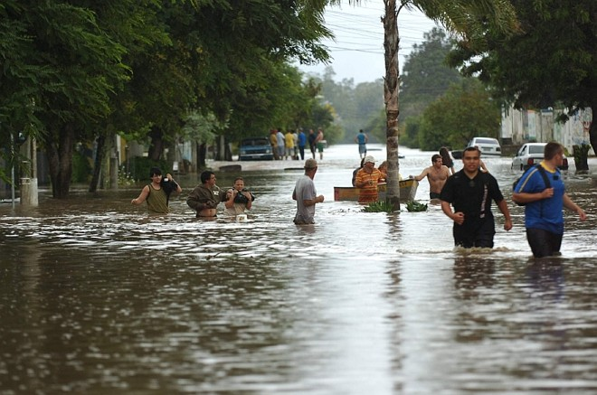
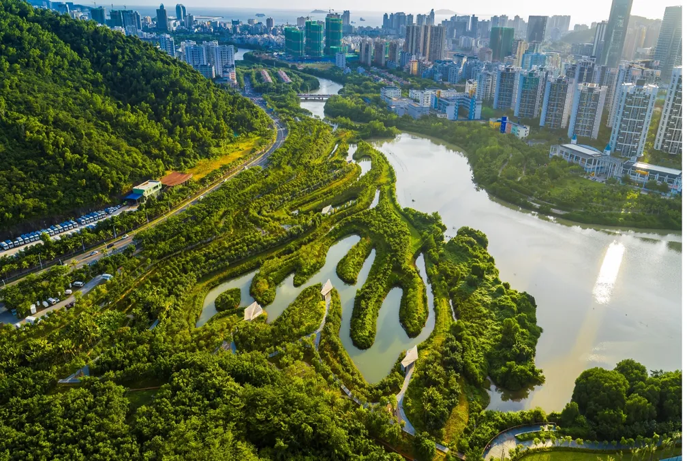

O Problema
Comunidades vulneráveis sofrem com o impacto devastador das enchentes. A falta de avisos prévios agrava perdas materiais e riscos à vida.
O AquaLink surge para mudar essa realidade.
Tecnologias Utilizadas

A solução utiliza sensores de nível de água conectados a um microcontrolador Arduino para monitoramento em tempo real.
Alertas visuais (LEDs) e sonoros (buzzer) são acionados automaticamente, e a comunicação com a população ocorre via aplicativos móveis.
Objetivos

Antecipar enchentes com até 48h de antecedência e reduzir em 70% os danos humanos e econômicos.
O AquaLink visa proteger comunidades vulneráveis, oferecendo um sistema inteligente e acessível de prevenção e emitindo alertas imediatos.
Público-Alvo
O sistema é ideal para locais com infraestrutura limitada, alcançando moradores, técnicos e gestores.
Cidadãos em geral são beneficiados pela agilidade e clareza dos alertas, garantindo maior segurança para todos.
Benefícios
O AquaLink é fácil de instalar, tem baixo custo e alta replicabilidade, otimizado para comunidades com recursos limitados.
Ele oferece monitoramento em tempo real e alertas imediatos, salvando vidas e bens com eficiência e praticidade.
No Dia a Dia

O aplicativo envia rotas de fuga e alertas precisos diretamente para o celular dos usuários, informando-os prontamente sobre riscos.
A exibição contínua do nível da água e os alertas visuais/sonoros garantem que a população esteja sempre informada e preparada para agir.